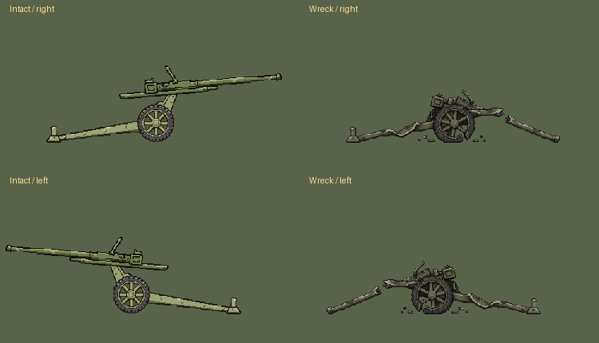

Isti top za partizansku i italijansku posadu. Pripremljen art za pregled vlasnika; povezivanje u igru radi se posebno.
Olupina zamenjuje ceo sklop; cev se u mrtvom stanju više ne crta zasebno. Posada, dim i vatra ostaju odvojeni.

Providan PNG · Metapodaci · Izvor i prompt